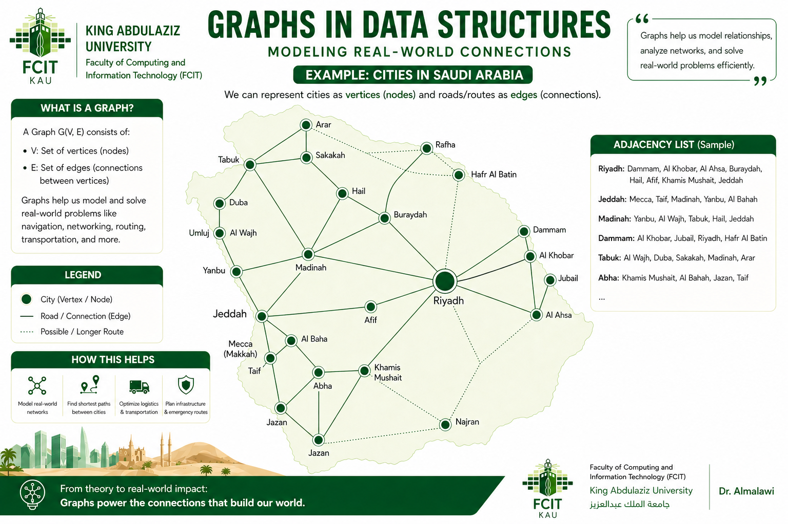

Introduction: Think of a Cabinet
🗄️ Data Structures are Like Cabinets
A helpful way to understand data structures: think of a cabinet.
A wardrobe has shelves and hanging space — designed for clothes.
A filing cabinet has labeled drawers — designed for documents.
A bookshelf has rows — designed for books.
Each cabinet is built for a specific kind of storage. In the same way,
the data structures you have already learned —
arrays, linked lists, stacks, queues, and trees —
are different kinds of "cabinets" for organizing data inside the computer.
Each one is built for a specific purpose, with its own strengths and limitations.
Today, we ask: which cabinet do we use for a map?
And we add a powerful new structure to our collection: the Graph.
A Real-World Challenge: Cities of Saudi Arabia
Study this map carefully — then ask yourself: how would I store this data in a program?

Look at the map above. It shows major cities of Saudi Arabia — Riyadh, Jeddah, Mecca, Medina, Dammam, Tabuk, and more — each connected to others by roads, with distances marked in kilometers.
🤔 Which data structure would you use?
Think carefully — which of your existing "cabinets" fits this problem?
cities[0]="Riyadh", cities[1]="Jeddah"...
But how do you encode that Riyadh connects to both Jeddah and Medina and Dammam?
An array just stores values in a line — it has no concept of "connection" between elements.
This is what we study today. Graphs are one of the most powerful and widely-used structures in all of computer science — and they begin right here, with a map of Saudi Arabia.
Before we define it formally, consider these everyday systems you already use — all of them are graphs:
Google Maps
Cities and locations are connected by roads. Finding the shortest route between two cities is a graph problem solved millions of times per second.
Social Networks
Facebook, LinkedIn, and Twitter are graphs. People are nodes, friendships and follows are edges. "Friends of friends" is graph traversal.
Flight Routes
Airlines connect airports with direct flights. Planning a trip with a layover is finding a path through a graph of airports and routes.
Internet Routing
Computers and servers are connected by cables and wireless links. Every webpage you load travels through a graph of network devices.
Task Scheduling
In compilers and build systems, tasks have dependencies — "task A must run before task B." This is a directed graph called a DAG.
What Is a Graph? — Formal Definition
A graph is defined mathematically as an ordered pair:
For example, a graph with five cities and four connecting roads would have V = {A, B, C, D, E} and E = {(A,B), (A,C), (B,D), (C,D), (D,E)}.
In this graph, V = {A, B, C, D, E} — five vertices. The edges E = {(A,B), (A,C), (B,D), (C,D), (D,E)} connect them. Notice that this graph has no direction (edges go both ways) and no weights — it is the simplest kind.
Why Graphs?
You might ask: "Can't we store graph data in an array or linked list?" Let us think carefully about what arrays and linked lists can and cannot represent.
Consider a road network. The city of Jeddah is connected to Mecca, Medina, Taif, and Riyadh. In a linked list, Jeddah can only point to one city. In an array, Jeddah is just an index — you cannot encode "Jeddah is connected to Mecca and Taif" without a separate, complex structure.
Here is why graphs are the right tool for each domain:
Road Networks
Cities are vertices, roads are edges. A city can have many roads (many neighbors) and each edge can store the distance. No linear structure can represent this naturally.
Social Networks
A person (vertex) can have hundreds of friends (edges). Friendship is mutual — the edge is undirected. "Mutual friends" is a graph intersection problem.
Internet Routing
Routers (vertices) connect to several other routers (edges). Packets travel along graph paths. Dijkstra's algorithm finds the fastest route on a weighted graph.
Types of Graphs
Graphs come in many varieties depending on the nature of their edges and connectivity. Understanding the types is essential for choosing the right algorithm.
Undirected vs Directed
In an undirected graph, edges have no direction — if A connects to B, then B also connects to A. In a directed graph (digraph), edges have a direction — an arrow from A to B does not imply B to A.
Weighted vs Unweighted
In an unweighted graph, all edges are equal. In a weighted graph, each edge carries a numeric value (cost, distance, capacity). Road maps use weighted graphs — the weight is the distance between cities.
Cyclic vs Acyclic
A cyclic graph contains at least one cycle — a path that starts and ends at the same vertex. An acyclic graph has no cycles. Trees are acyclic. Road networks are typically cyclic.
Connected vs Disconnected
A connected graph has a path between every pair of vertices. A disconnected graph has at least two vertices with no path between them — it contains multiple connected components.
DAG — Directed Acyclic Graph
A DAG is a directed graph with no cycles. It is fundamental in task scheduling, compilers (dependency resolution), spreadsheets, and package managers. Topological sort — ordering tasks by dependencies — only works on DAGs.
Terminology
Before studying graph algorithms, you must be comfortable with the vocabulary. Every term below appears repeatedly in algorithm descriptions.
-
Vertex / NodeA fundamental unit of a graph. Represents an entity: a city, a person, a computer, a task. The set of all vertices is denoted V.Example: In a flight map, each airport is a vertex.
-
EdgeA connection between two vertices. Represents a relationship or link. The set of all edges is denoted E. An edge can be directed (one-way) or undirected (two-way).Example: A direct flight between two airports is an edge.
-
DegreeThe degree of a vertex is the number of edges connected to it. For directed graphs: in-degree = edges coming in, out-degree = edges going out.Example: If city D connects to B, C, and E — its degree is 3.
-
PathA path is a sequence of vertices where each consecutive pair is connected by an edge. A simple path visits no vertex more than once.Example: A → B → D → E is a path of length 3 (three edges).
-
CycleA cycle is a path that starts and ends at the same vertex, passing through at least one other vertex. Detecting cycles is critical in deadlock detection and dependency resolution.Example: A → B → D → C → A is a cycle.
-
AdjacentTwo vertices are adjacent (or neighbors) if there is an edge directly connecting them. In a directed graph, adjacency is directional: if edge (u,v) exists, v is adjacent to u but not necessarily u to v.Example: A and B are adjacent because edge (A,B) exists.
-
Connected ComponentA connected component is a maximal subset of vertices such that every vertex in the subset is reachable from every other vertex in the subset. A connected graph has exactly one component.Example: A disconnected graph with 6 vertices might have two components: {A,B,C} and {D,E,F}.
Adjacency Matrix
An adjacency matrix is one of the two main ways to represent a graph in memory. It uses a 2D array (matrix) of size V × V, where V is the number of vertices.
matrix[i][j] = 1 if there is an edge from vertex i to vertex j, otherwise matrix[i][j] = 0.
For undirected graphs, the matrix is symmetric: matrix[i][j] = matrix[j][i].
Consider the same 5-node graph from Section 2: edges (A,B), (A,C), (B,D), (C,D), (D,E).
| A | B | C | D | E | |
|---|---|---|---|---|---|
| A | 0 | 1 | 1 | 0 | 0 |
| B | 1 | 0 | 0 | 1 | 0 |
| C | 1 | 0 | 0 | 1 | 0 |
| D | 0 | 1 | 1 | 0 | 1 |
| E | 0 | 0 | 0 | 1 | 0 |
The blue 1s mark positions where an edge exists. Notice the matrix is symmetric along the diagonal — this is because the graph is undirected. The diagonal is all zeros because a vertex does not have an edge to itself.
Adjacency List
An adjacency list represents the graph by storing, for each vertex, a list of its neighbors. Instead of a full V×V matrix, we only store the edges that actually exist.
For the same graph — edges (A,B), (A,C), (B,D), (C,D), (D,E):
A --> [ B, C ]
B --> [ A, D ]
C --> [ A, D ]
D --> [ B, C, E ]
E --> [ D ]
Each key is a vertex and each value is the list of its direct neighbors. Vertex D has three neighbors (B, C, E) so its list has three entries. Vertex E has only one neighbor (D), so its list has one entry.
Adjacency Matrix vs Adjacency List
Choosing the right representation affects the performance of every graph algorithm you run. Here is a direct comparison:
| Feature | Adjacency Matrix | Adjacency List |
|---|---|---|
| Space Complexity | O(V²) — always allocates V×V cells | O(V + E) — only stores existing edges |
| Check edge (u, v) | O(1) — direct array lookup | O(degree(u)) — must scan neighbor list |
| Add an edge | O(1) — set two cells to 1 | O(1) — append to adjacency list |
| Remove an edge | O(1) — set two cells to 0 | O(degree(u)) — find and remove from list |
| Iterate all neighbors of u | O(V) — must scan entire row, even zeros | O(degree(u)) — only visits real neighbors |
| Best suited for | Dense graphs (E close to V²), or when frequent edge-existence checks are needed | Sparse graphs (E much less than V²), which is most real-world graphs |
| Memory with V=1000 | 1,000,000 cells (even if only 2,000 edges exist) | ~4,000 entries (2 × E for undirected graph with 2000 edges) |